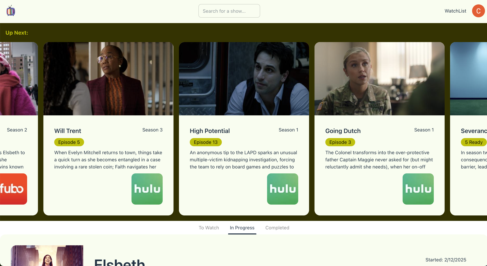

React, Typescript, Django, Auth0
Feb 13th, 2025
After working for over 3 years in Svelte I wanted to make sure my React chops were still sharp, and see if I could add Typescript to my repertoire as those two in combination seem to be the go-to frontend for most modern applications. I decided to build a TV season/episode tracking web app because I have been using a phone app (Watch List) to track shows that I want to watch/am currently watching but it is lacking some features that I think would make it a better app. The two features I was aiming to find a solution for were: finding where the show was available to watch without having to click through to other screens, and episode stat tracking. So far I have implemented the first of those features, and the backend for the second.
React was fairly easy to pick back up. I had some previous projects I could use as examples. There have been some upgrades since I last used it (my To Do app was built with react 17, and this project was in React 18, although React 19 has been recently released), but overall the core concepts remain the same. I found the transition to using Typescript with React to be somewhat smooth, and it has helped catch errors early in the development process but I find that some of my objects get quite large and complicated, and the typescript errors are quite picky. I definitely have some Typescript errors floating around this project currently, but I have a workable app. Some errors I have explicitly ignored, like no floating promises, others I'd like to go back to and find better ways to write my code that removes the errors. I don't mind making custom types and I found that autocomplete in VSCode made the process fairly simple.
This project was also my first time implementing auth into an app. I went with Auth0 as that seems to be a popular option and is used by my current employer so I had some familiarity with it already. The documentation was good but sometimes difficult to find what I truly needed. It took me a few days to settle on a setup that I felt was best. I went with the Auth0 React integration so login is handled by the frontend, and then the backend is protected by a middleware that checks an access token the user is given via auth0 and passed in the header from the frontend calls. I also spent a day planning out my backend, starting by writing out everything that I wanted the app to be able to do, then structuring a backend around that. This meant setting up three tables, one for a user profile so the user could set preferences that could be used to control features around the application. Next was the actual watch list table that would hold all of the seasons users are watching and track their progress. The table is fairly small since I don't need to save off a lot of actual season info, just info that is specific to the user or info that I want to compare for updates, like the status of a television show. In the future I could alert users to cancelled shows or let them know when a show is starting production again. Lastly there is a table to track stats. I wanted to start simply for now just tracking the number of shows a user marks as watched and how many minutes of television that adds up to, and track those counts per day. Once the backend was set up and auth and fetch calls were working as intended, the rest of my time could be spent having fun with the UI. I used tailwind and DaisyUI for styling and components. react-toastify made toast notifications easy.
There is a lot I still want to do with this project, check the README for the latest info about the project status. I will try to update this page as new features get integrated.
Start tracking your TV watching here!
See my code on github.